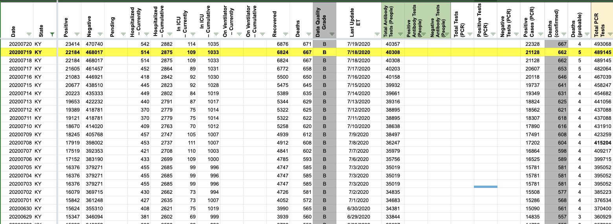
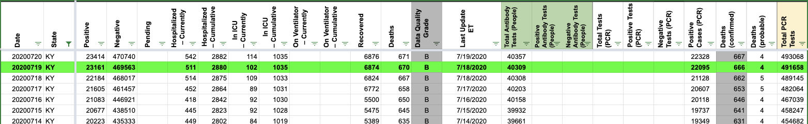

[KY] Update on 7/19
Issue number 653
brianskli opened this issue on July 21, 2020 at 10:34 am
Labels Historical Data Missing Data
Front user reports that CTP did not enter data from KY’s update on Sunday, 7/19.
PDFs with dates in question:
7/19: https://chfs.ky.gov/cvdaily/COVID19DailyReport0719.pdf 7/20: https://chfs.ky.gov/cvdaily/COVID19DailyReport0720.pdf
brianskli added the label Historical Data on July 21, 2020 at 10:34 am
brianskli added the label Missing Data on July 21, 2020 at 10:34 am
brianskli closed the issue on July 21, 2020 at 10:50 am
It is possible that KY’s PDF was not uploaded in time for capture. The 7/19 PDF listed above was used for filling data.
Before:  After: 